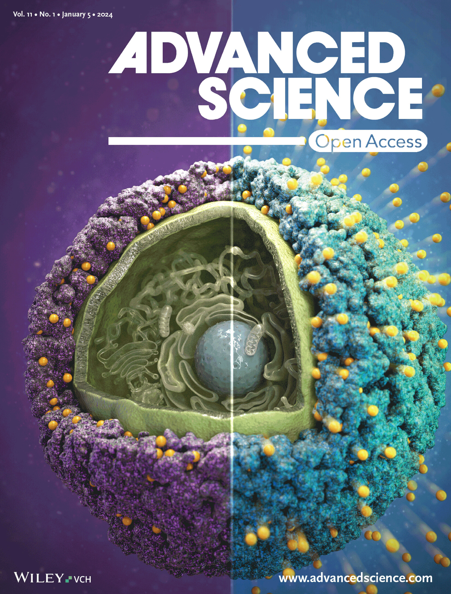
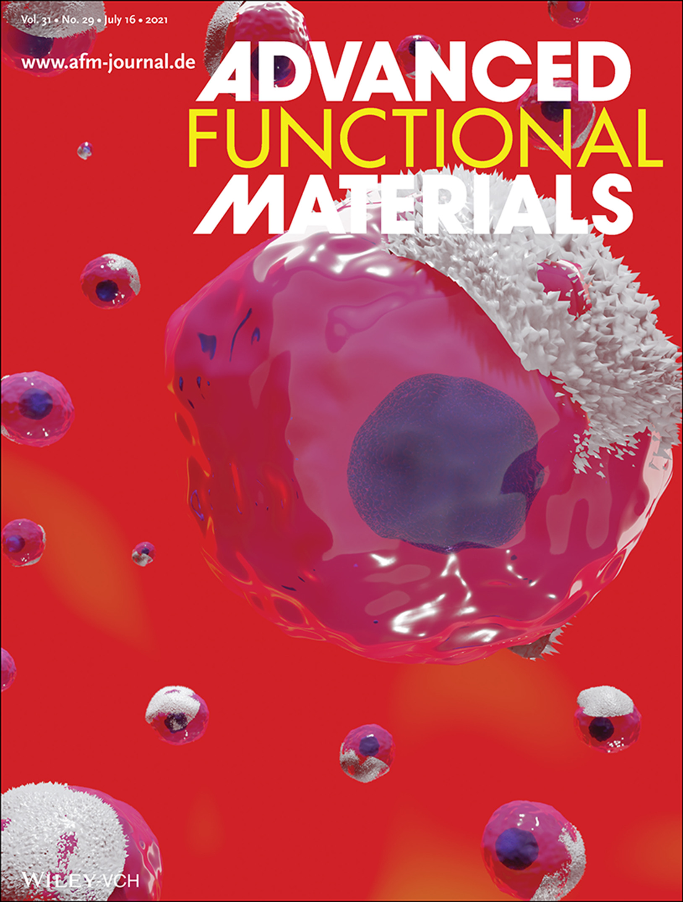
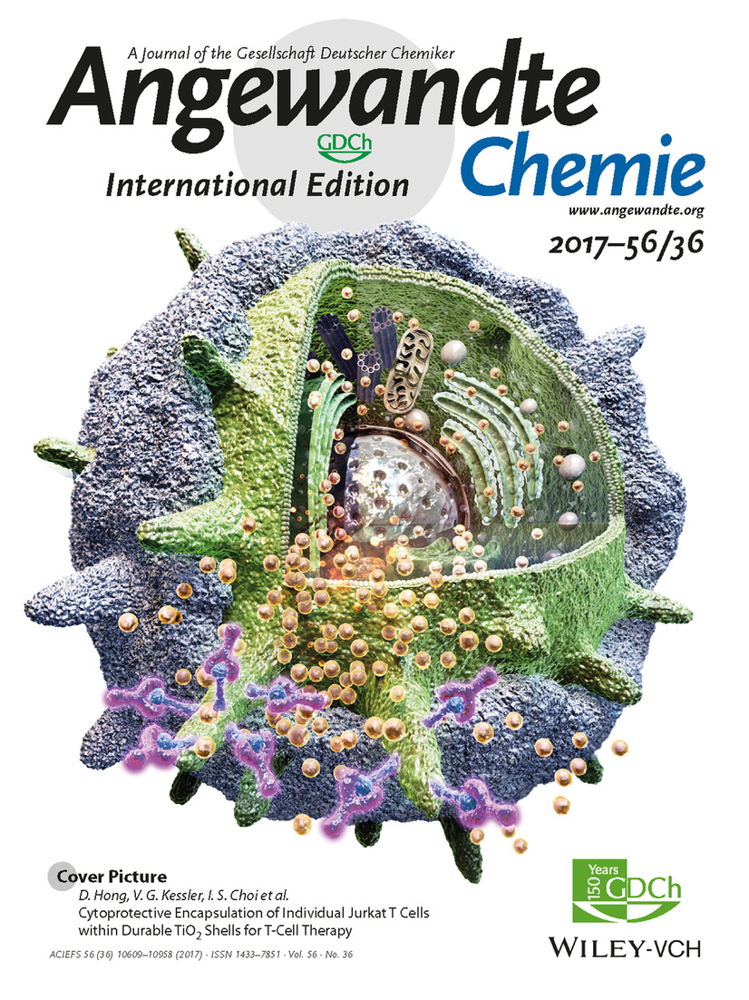
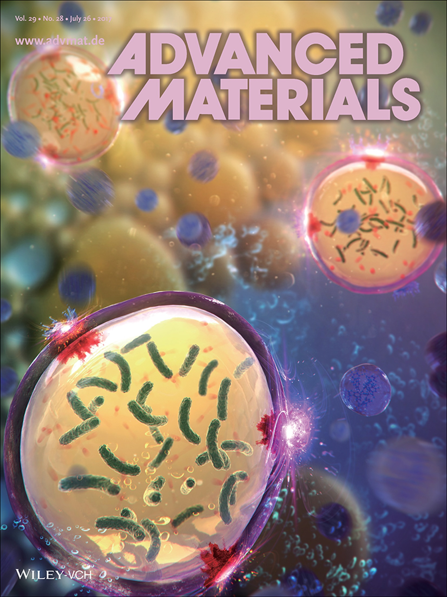
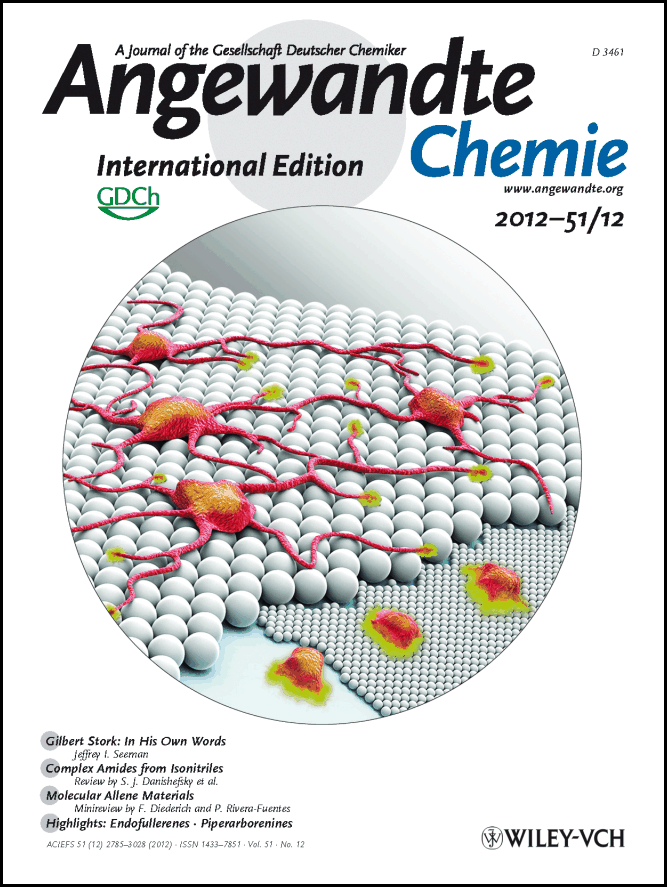
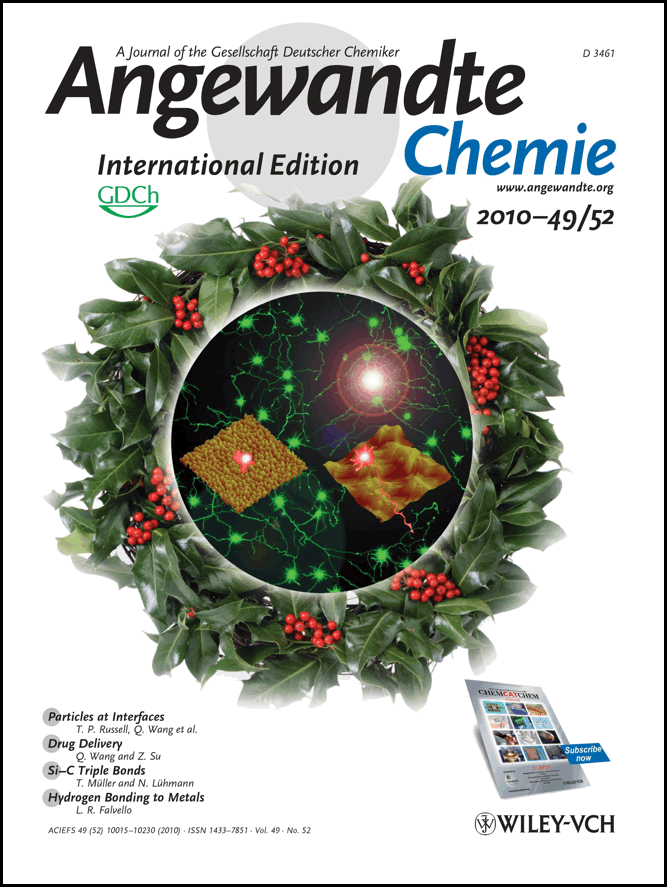
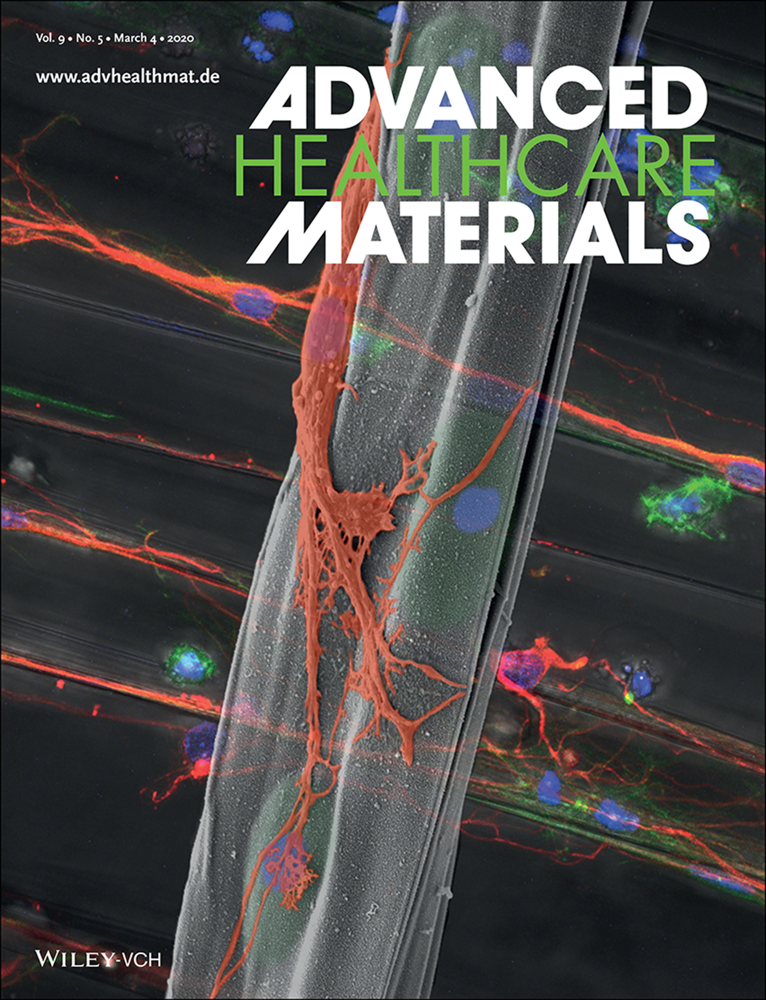

Home
News
People
Research
Publications
Links
Symposia
SCNE: Single-Cell Nanoencapsulation
Reviews:
Chem. Rev.
(2025)
,
Adv. Therap.
(2023)
,
Adv. Healthc. Mater.
(2021)
,
Adv. Mater.
(2020)
,
Adv. Mater.
(2018)
,
Acc. Chem. Res.
(2016)
,
Adv. Mater.
(2014)
,
Trends Biotechnol.
(2013)
,
Small
(2013)
Wikipedia:
Single-cell nanoencapsulation




Neuroscience



Machine Learning
Chemically Intuitive Deep-Learning Models:
3DGCN
,
InteractionNet
,
ChemGCN
,
MolNet
, and
MolNet_Equi